×
 ❮
❯
❮
❯
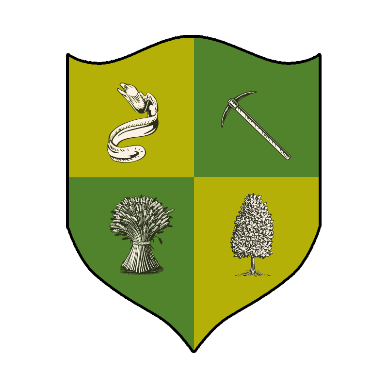
House CrosslandPurveyors of The Yeoman’s End — Gambling, Favors & Fun in the Marches
Find out more about us17 January 2026
Celebrate Marcus Crossland’s birthday with an unforgettable night of feasting and revelry. Learn more
24–26 April 2026
Join House Crossland for the first Profound Decisions event of the year at the Steeplechase LRP Centre.
“A handshake can be worth more than gold… if you know whose hand to shake.”
— Marcus Crossland
House Crossland is well‑connected, resourceful and always has an opportunity for those who know where to look. We deal in favours, coin and influence, ensuring that no opportunity is ever wasted. What we really get up to, and how we go about it, is something best discovered in person. Come find us in the Marches, and perhaps we you can learn a bit more about the real Crosslands.
We’re a friendly and welcoming group at Empire LRP, always happy to help new players find their footing. Whether you need guidance on the game, connections to get involved or just a place to hang out, House Crossland is happy to support you.
As the steward of House Crossland, Marcus is the beating heart of the family. He’s the always keen to strike a deal and often found gambling in the casinos of Anvil. He's a ruthless business-man, but loyal to his family. Under his guidance, our house has grown from a handful of vagabonds into a force to be reckoned with.
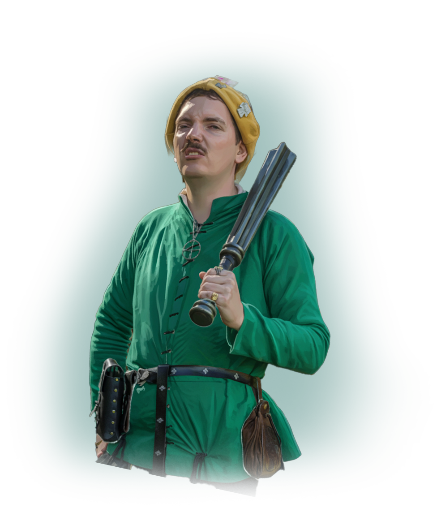
House Crossland comprises a varied group of individuals, each bringing unique talents to our collective endeavours. Click on a portrait to learn more about their roles and stories.
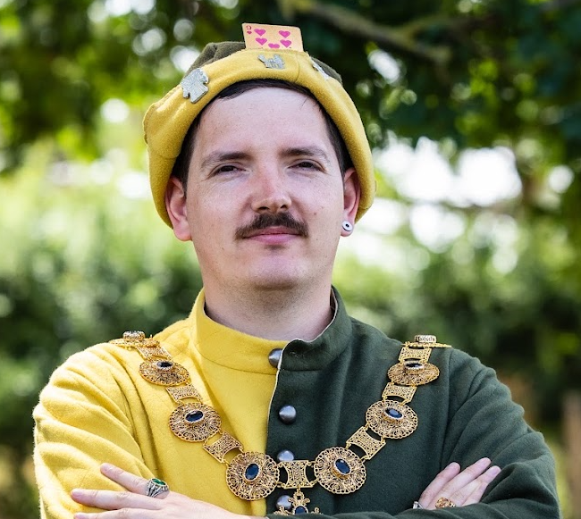
House Steward
Purveyor of Pleasures
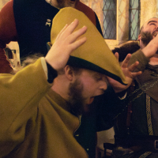
Second in Command
“Iron Ass”
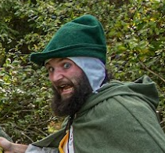
Sweetie Merchant
Keeper of Kegs
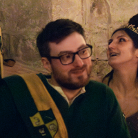
House Enforcer
“The Reliable Drunk”
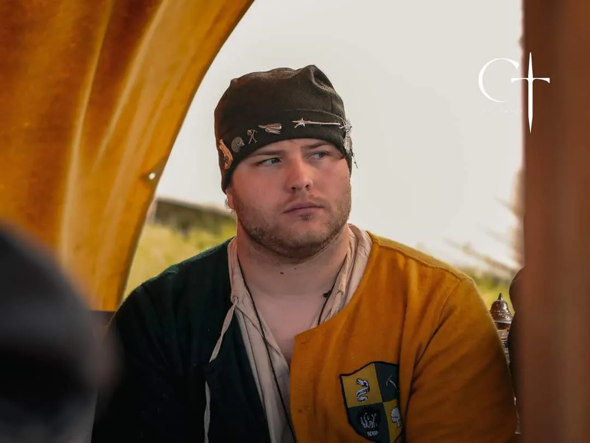
Captain of Arms
Protector of the House
Chief Chef of the House
Captain of the Fleet
House Magician
Provider of Shortbread
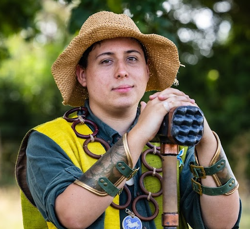
Militia Liaison
Cocktail Curator & Herby Guy
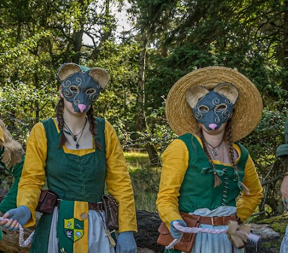
Twin Tricksters
Faces of the House
House Runner
Performer & Negotiator
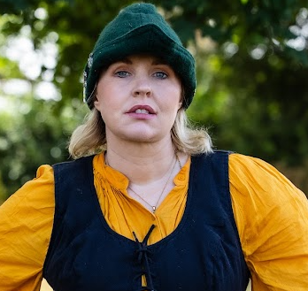
Battle Medic
Keeper of Order
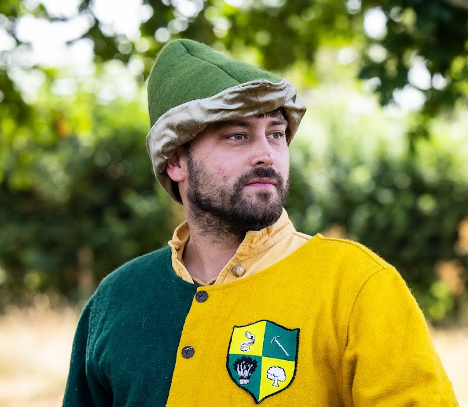
House Courier
Merchant of Shadows
Swamp Rat
Scallywag of Bregasland
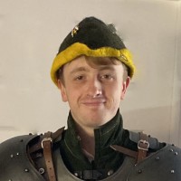
Archer & Beekeeper
Maker of Poisons
Enforcer
Dog’s Body
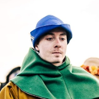
False Steward
The Decoy of the House
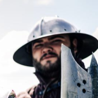
House Co-Founder
Fallen in Battle
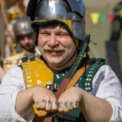
Miner’s Champion
Fist of the People
Spiritual Advisor
Prophet of the Pot
“A name of convenience, not bloodline—a banner taken up by those who had none.”
— Robert Broadwick
The name Crossland was not always known in the Marches. In truth, it’s a name of convenience, not bloodline—a banner taken up by those who had none. It was whispered into being by a collection of strays, traders and opportunists who saw strength in numbers and prosperity in unity.
At the heart stands Marcus Crossland, the first to bear the name. Where he came from is a matter of speculation. Some say he was a disgraced farmhand, others that he cut his teeth dealing in debts and disputes before setting his sights on something greater. What’s certain is that he gathered the right sort of people—those who had fallen through the cracks of Marcher society but weren’t ready to be trampled.
It started small, as such things do. A few odd jobs, a little trade, a handful of favors called in. A deal struck in Hay. A debt settled in Meade. A problem quietly resolved in the night. Before long, the Crossland name began to mean something.
In the Marches, where land and loyalty hold power, House Crossland offered something different—a place for those without either. Not sworn to any one household, not reliant on favour, but moving between them, making themselves indispensable.
In recent years, with the Empire looking outward—toward war with the Jotun, toward reclaiming Bregasland—House Crossland took root in the Marches. With a keen sense for opportunity, they built connections rather than claims, trading in information, supplies and solutions to problems others would rather not acknowledge.
They spread their reach across the Marches, but never tied themselves down. Their people were seen at market fairs and in military camps, on the road with traders, or raising tankards in distant taverns. To some, they were an insult to tradition, a group who skirted the rigid order of Marcher life, refusing to be bound to one farm, one stead, one banner. But to others, they were a lifeline.
As their influence grew, so did their presence in Anvil. The Yeoman’s End became their base of operations—a place where deals are made, fortunes won and lost, and fates decided over bowls of their now‑famous soup. What began as a simple gathering spot has become known throughout the Empire as a nexus of opportunity and intrigue.
House Crossland has grown beyond a handful of vagabonds scraping by on odd jobs. Our name carries weight; our presence in the Empire cannot be ignored, and when we take interest in a venture, it tends to prosper—or disappear. We are not noble, not yeoman, not militia, and yet we command respect. Where we go next is up to us. One thing is certain: House Crossland is not a family easily crossed, nor one to be taken lightly.
A hearty, rustic soup brimming with tender cabbage and root vegetables — perfect for a chilly evening in the Marches.